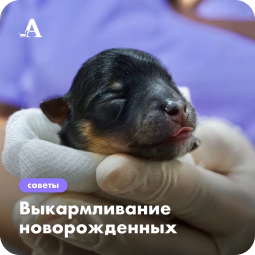

Наружный отит и грибы
Malassezia
29 мая 2018
Данные клинического осмотра,
указывающие
на наличие
наружного отита, включают такие признаки, как отек и эритема
ушной
раковины,
выделения
из ушей, болезненная реакция и/или беспокойство при пальпации
наружного
слухового хода и
потряхивание головой после т ...